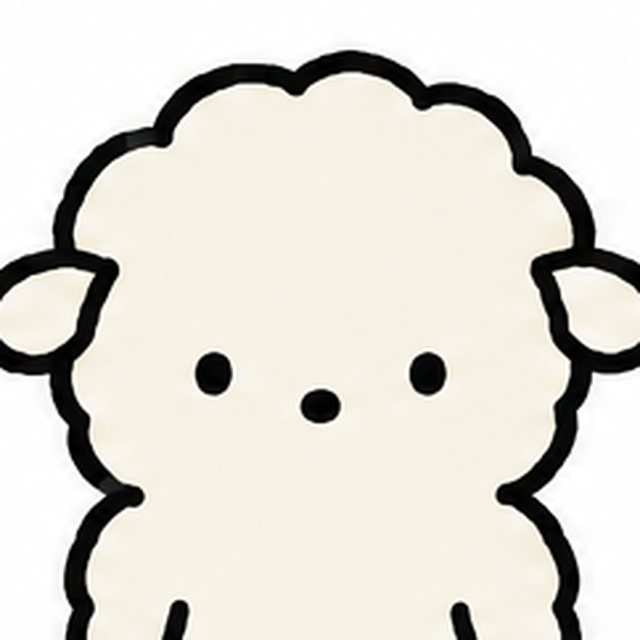
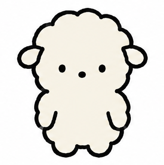
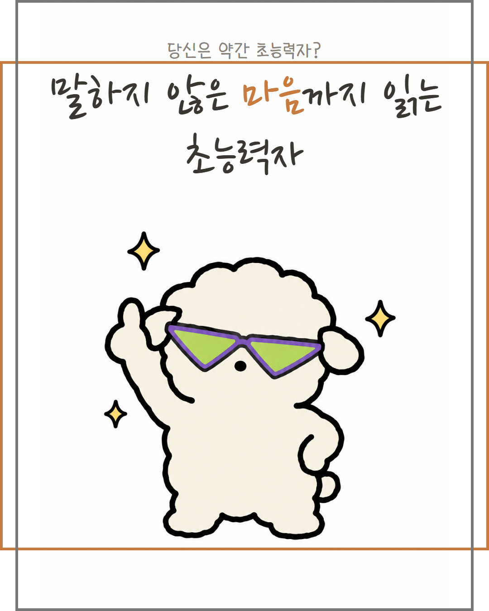
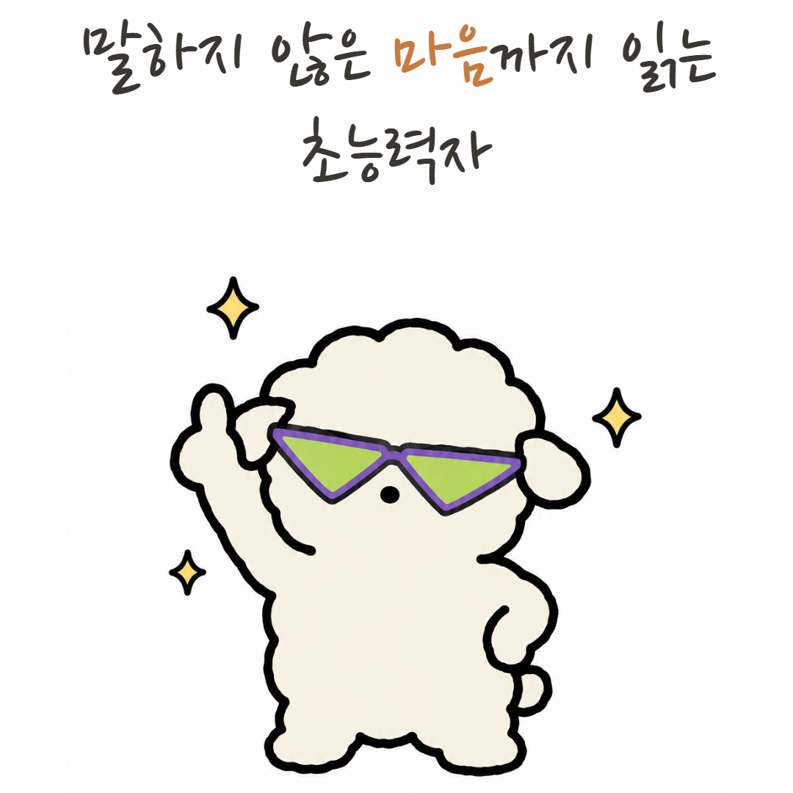
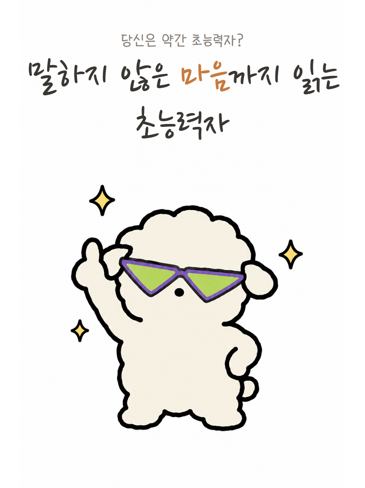

인스타 계정 검토
아이디 · 계정명 · 소개 · 프로필 사진 · EP.01 썸네일
프로필 목업 (추천안)

당신은 약간 초능력자?
@yakgan.super
단점인 줄 알았던 게 사실은 초능력이었다면.
크림색 양 두부와 친구들의 일상 힐링툰.
당신 곁의 두부를 태그해 주세요.
아이디 후보
| 아이디 | 근거 |
|---|---|
yakgan.super 추천 | 제목 「약간 초능력자」의 축약. 입으로 말하기 쉽고 시리즈 브랜드가 그대로 남는다. 두부 외 조연 편이 늘어도 어색하지 않음 |
dubu.superpower | 캐릭터 + 콘셉트. 검색은 잘 되지만 15자로 길고, "두부"가 반려동물 이름으로 흔해 변형이 많이 선점됨 |
dubu.yakgan | 짧고 둘 다 담김. 뜻이 바로 안 읽히는 게 단점 |
yakgan_toon | "툰" 접미가 장르 검색에 유리. 단, 레퍼런스 계정 다수가 쓰는 흔한 형태 |
- 피할 것:
chonungryeokja류 로마자 표기(오타 유발), 숫자 붙이기(_22)는 선점됐을 때만 - 사용 가능 여부는 가입 화면에서 직접 확인 필요 (브라우저 프로필이 다른 세션에 잠겨 있어 이번엔 조회 못 함)
계정명 · 소개
| 계정명(이름) | 당신은 약간 초능력자? — 12자. 검색 노출용으로 뒤에 | 두부툰을 붙이는 안도 있으나, 물음표로 끝나는 제목이 가장 강한 훅이라 단독 추천 |
|---|---|
| 소개(150자) | 3줄. ① 콘셉트 한 문장 ② 주인공·장르 ③ CTA(댓글 유도). 이모지 없음, MBTI 미언급(작품 내 비노출 원칙). 연재 요일이 정해지면 ②와 ③ 사이에 "매주 O요일" 한 줄 추가 |
| 링크 | 당장은 비움. 에피소드가 5편 이상 쌓이면 Pages 아카이브 링크 |
프로필 사진
얼굴 클로즈업 추천

전신- 시트 FRONT에서 잘라냄. 원형 썸네일은 피드에서 56px 이하로 보이므로 점 눈·코가 식별되는 얼굴 클로즈업이 맞다
EP.01 썸네일

크롭 영역주황 1:1 · 회색 3:4
1:1로 잘렸을 때시리즈명이 통째로 사라짐
3:4 그리드양옆 6%만 잘림, 문제 없음- 좋은 점: 흰 배경 + 큰 캐릭터 + 손글씨 제목 + 포인트 컬러 1곳. 레퍼런스(하루살이·뱁새) 표지 공식 그대로. 시리즈명이 들어가 그리드에서 2편부터 시리즈로 읽힌다
- 상단 세이프존: 시리즈명이 y≈90px, 제목 첫 줄이 y≈165px에서 시작. 1:1 크롭(탐색 탭·해시태그·공유 미리보기)에서 시리즈명은 완전히 사라지고 제목도 아슬아슬하다. 제목 아래 빈 공간(y 370–520)이 남으니 텍스트 블록 전체를 100px쯤 내리면 해결
- 줄바꿈: 「말하지 않은 마음까지 읽는」이 한 줄로 화면 폭 끝까지 차고 「초능력자」만 홀로 남는다. 3줄(말하지 않은 / 마음까지 읽는 / 초능력자)이 리듬도 낫고 폭 여유도 생긴다
- 포인트 컬러 위치: 지금은 "마음". 초능력의 동사 "읽는"에 주는 편이 제목 훅과 맞는다
- 선글라스 표지는 얼굴이 가려지지만 에피소드 소품이므로 유지. 첫 방문자가 맨얼굴을 보는 곳은 프로필 사진뿐이라 프로필은 얼굴안으로